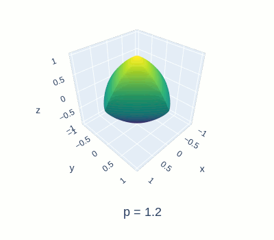
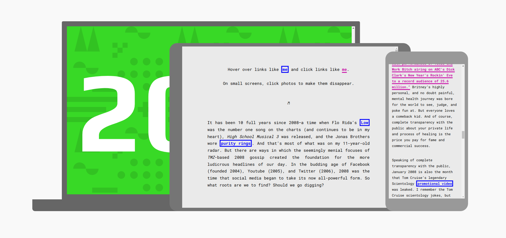

I graduated with a Bachelor's from Tufts University in 2018 and am currently finishing my Master's degree at UC Davis. Both of my degrees are in applied math (a field so nice, I studied it twice!) but I also have a background in both computer science and design. I enjoy easy hikes, feel-good sci-fi, and delightful oddities. Scroll down for a portfolio of my web development and graphic design work.
↓
Highlighted Web Projects
Graphing the 3D p-Norm Unit Ball
Link · Mathematical exploration of the problem of graphing the p-norm unit ball in 3 dimensions.
Facebook Quiz
Live · Github · Designed from scratch to imitate Facebook - user follows a choose-your-own-adventure quiz in the comments section of a controversial post.

Major Sprawl
Live · Github · Maps the spread of Tufts courses by department across campus.

Book Recommendations
Live · Github · Connects from Google Forms and dynamically links new recommendations to Goodreads.

The Literary Issue 2018
Live · Github · Artistic digitization of the special Literary Issue of the Tufts Observer, containing a compilation of poetry, prose, and art.

Graphic Design


Other Web Projects
Photo Inset: transparency.

Long Distance

The Queerness Issue 2017

Podcast: Chartered Exploitation

Comedy News

Missed Connections

The Literary Issue 2017

2008
South Asia Speaks

Podcast: What does your tattoo mean to you?

The Reality of Transitioning at Tufts

Photo Inset: A Tale of Two Tehrans

This webpage uses Google Design's resizer web app for screenshots of projects.